Introduction
GeoDatalytics is focused on modeling urban systems, so networks are essential to understanding the connectedness of infrastructure. Urban lifeline systems for water, electricity, transportation, etc. are spatially distributed across a set of connectors that can be represented as network edges and access points that can be represented as network nodes. Representing these systems with nodes and edges allows us to apply graph topology concepts for analysis and identify opportunities for improved connectivity that serves the community equitably.
A network representation can be created for certain kinds of vector data; nodes are created for point features and edges are created for the line features that intersect those points. A separate edge is created for each segment of a line between two points.
The Networks panel offers animation features that allow you to explore how the connectivity of a network is affected when some nodes go out of service. In the screenshot below, a network animation, generated by an analytics task, shows how the Boston subway system becomes disconnected when nodes are affected by an extreme flood event.
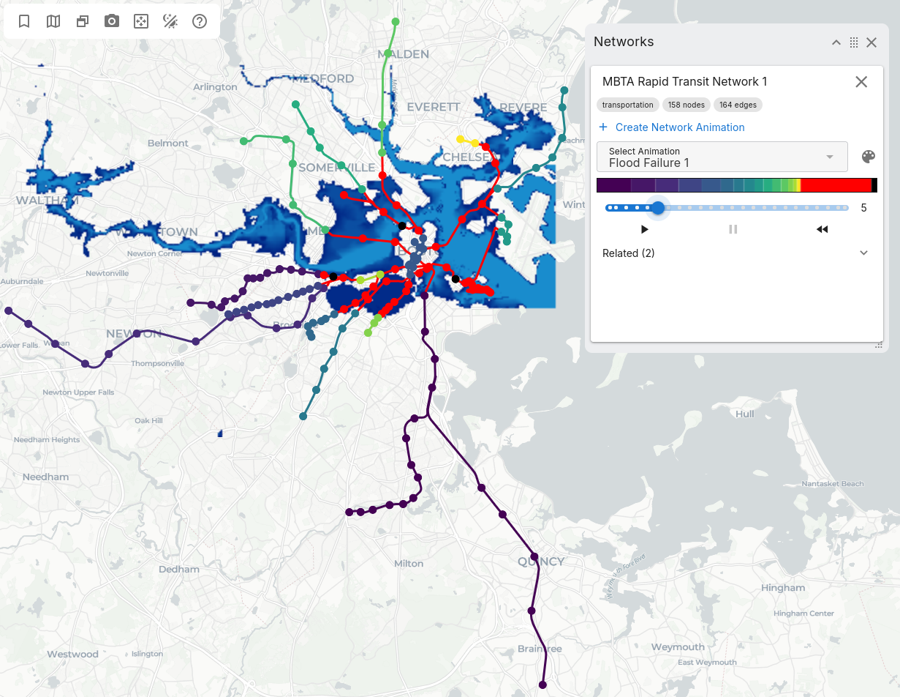
Example Networks
GeoDatalytics has a few built-in examples of transportation networks. The Boston subway system in the MBTA Rapid Transit dataset has a network representation (shown in the screenshot above), and this acts as a good example of a relatively sparse network for basic analysis.
You can also create a more dense transportation network via the “Create Road Network” task, which takes a city name as input and will generate a network as output where intersections are nodes and the road segments between them are edges. These networks are much more complex, with a greater number of nodes and edges compared to the subway system. Road networks are also far more resilient because they have a greater degree of redundancy. The screenshot below shows only a portion of the road network created for Boston.
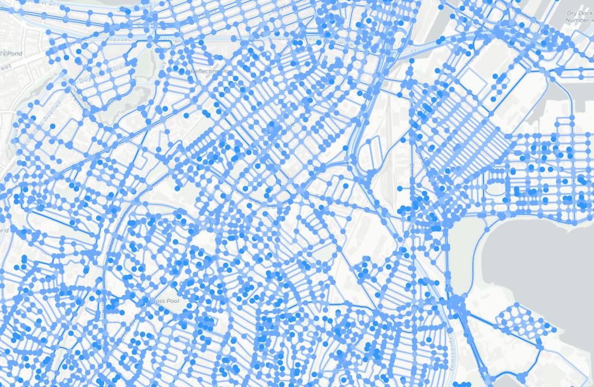
These transportation examples demonstrate the basic network analysis capabilities, which can be applied to other interconnected urban systems. If your use case is focused on other types of urban systems and you would like help creating network representations of those systems, Contact Kitware so we can support your use case.
Currently, creation of a network is only supported through the API or Analytics tasks.
Basic Controls
In the Network panel’s initial state, a list of available networks is displayed. A search bar allows you to filter the networks by name. Each network shows a vertical three-dots icon on the right.
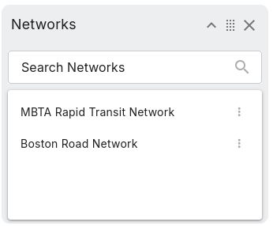
Clicking the dots icon will open the details dialog for that network, which will display some basic information and metadata.
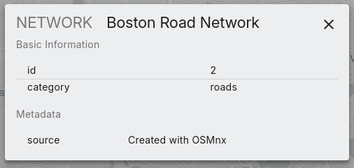
Clicking on the name of a network will add the network to the map (if not already shown) and show the main panel view. In the title section of the main panel view, the network’s name is displayed above a set of chips that provide an overview of the network. The first chip displays the network category, the second chip displays the number of nodes in the network, and the third chip displays the number of edges.
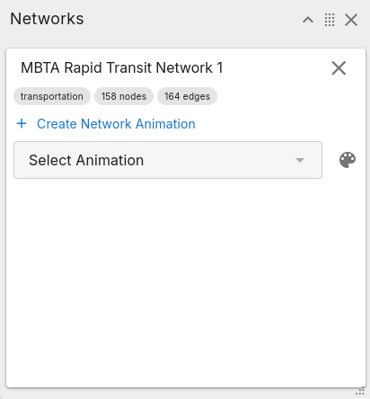
Below the title section are the animation controls. If you have write access on the current project, then a button for creating an animation will be available. We’ll explore the controls for manual animation creation in the following subsection. For now, we’ll view an existing animation that was generated by the “Flood Network Failure” Analytics task (see Analytics Panel for more context.).
The animation selection control offers a list of animations created for the current network. Once an animation is selected, additional controls appear and the network shown on the map will be recolored to visualize the first tick of the selected animation. In the screenshot below, the first tick of this animation only has 5 deactivated nodes (shown in red by the coast, where the flood intersects the network in the first hour of the flood event). Most other nodes in the network are all still connected, forming a single network component (shown in purple). There is one node that is not deactivated but it is surrounded by deactivated nodes so it is not connected to any other active nodes; this node is shown in black.
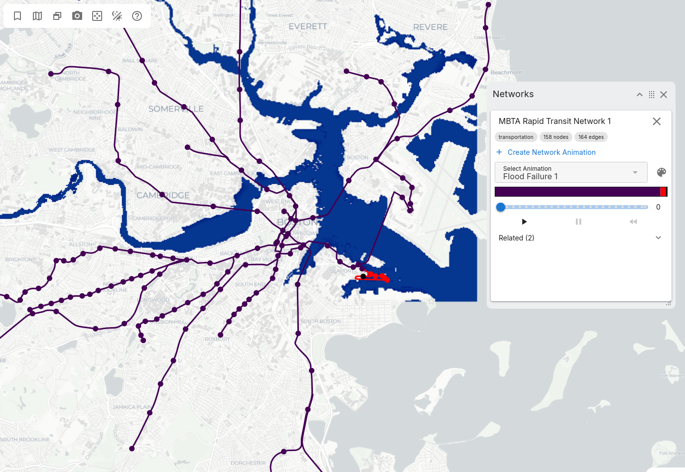
When an animation has been selected, additional controls appear in the Networks panel. The first of these controls is a color bar that provides an overview of how nodes in the network are colored on the map. The sections of the color bar are sized proportionally to how many nodes are in that group. Hovering over a section of the colorbar will highlight that node group on the map and display a tooltip with the group name and node count.
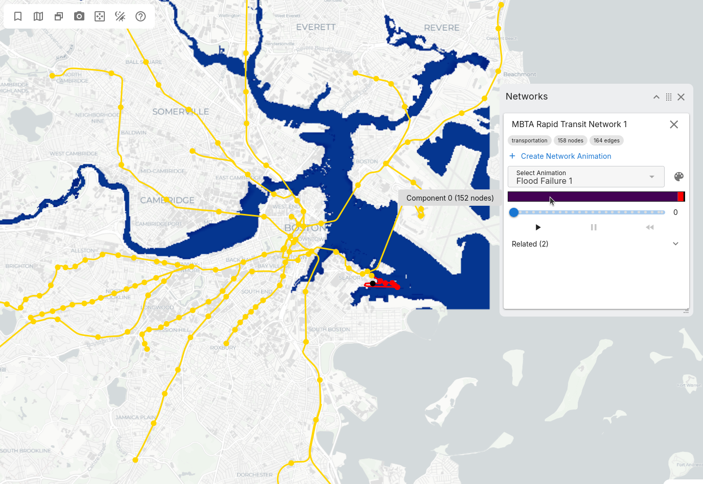
Below the color bar, an animation timeline slider is shown. You can jump to any animation tick using this slider. Or, you can use the set of play, pause, and rewind buttons that appear below the animation slider to automatically step through the animation at a regular interval.
The network colors on the map and the color bar will update with each animation tick. As the network becomes more segmented by the deactivation of more nodes, each connected component will be assigned a color. The component groups are ordered by size in the color bar.
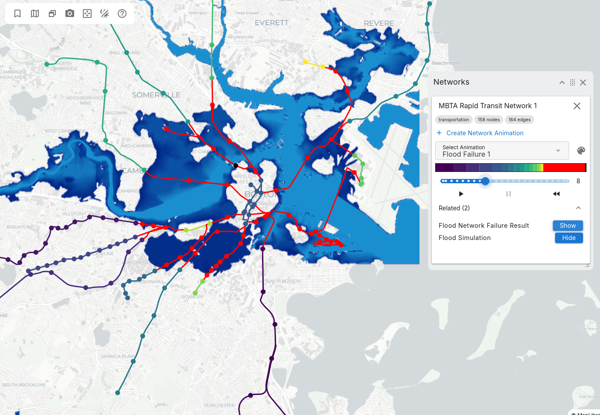
Lastly, an expandable section of related objects is shown at the bottom of the animation controls (if the selected animation has any related objects). For animations generated by the “Flood Network Failure” task, the task result that generated it and the flood layer used are included as related objects.
Each related object has a show/hide button next to it. If the related flood layer is shown on the map while viewing the network animation (like in the screenshots above), the flood frame will automatically be updated as the animation tick updates.
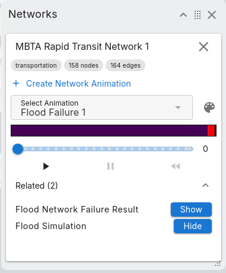
Animation Configuration Menu
The palette icon next to the animation selection control provides a menu with some options to configure how the animation is visualized.
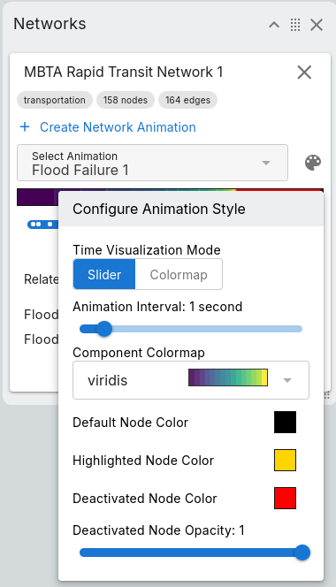
The time visualization mode control allows you to toggle how time is represented in your visualization. By default, time is visualized with the slider; you can move through time by manipulating the slider, and you can only ever see a single time step at once.
If you switch to colormap time mode, then the slider will disappear. Some of the configuration options are not applicable in this mode, so those controls will disappear as well. In this mode, time is mapped to color, so all timesteps are represented with a static visualization.
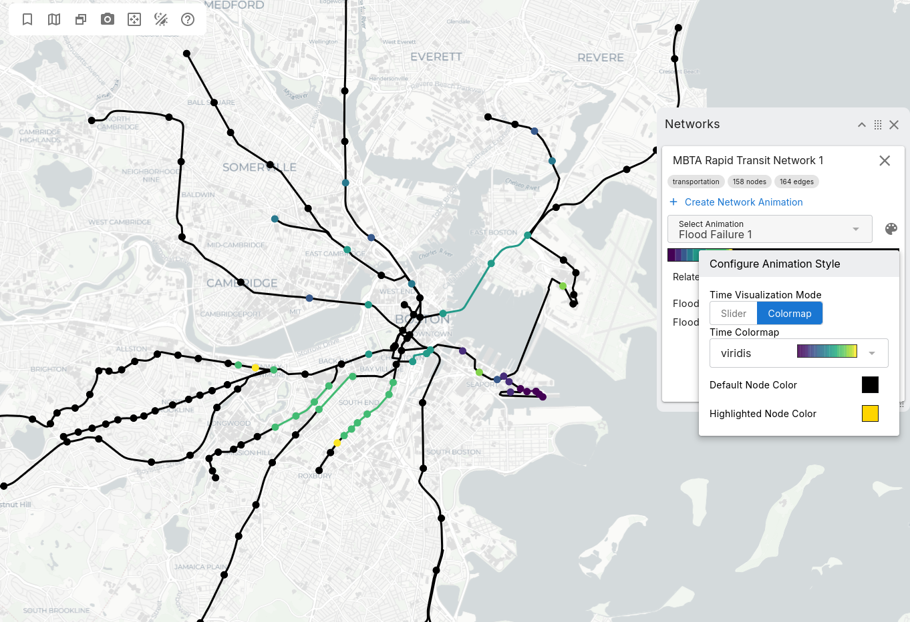
The node colors no longer represent connected components for a single time step; instead, a node is colored according to which timestep it goes out of service. If a node never goes out of service, then it will use the default node color.
The colorbar still shows proportions of node colors, but now a color represents a state in the animation timeline. Color groups are not ordered by size, but by timestep index. Hovering over a color in the color bar will still highlight the nodes in that group and display a tooltip with the group name and number of nodes.
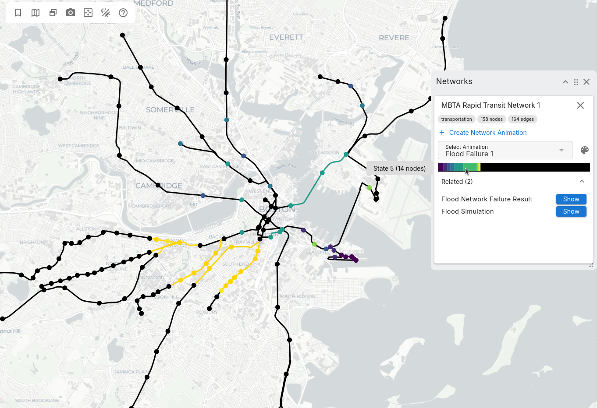
The other controls in the animation configuration menu are as follows:
- Animation Interval (not applicable when mapping time to color). Interval in seconds between ticks when using the play or rewind buttons. Minimum 0.5 seconds and maximum 5 seconds.
- Colormap. Used to represent timesteps when mapping time to color, otherwise used to represent separate network components.
- Default node color. Used to represent nodes that never go out of service when mapping time to color, otherwise used to represent nodes that are not deactivated and not part of a component (single disconnected nodes).
- Highlighted node color. Used to highlight nodes in a group when hovering over a section of the color bar.
- Deactivated node color (not applicable when mapping time to color). Color used to represent deactivated nodes.
- Deactivated node opacity (not applicable when mapping time to color). Opacity of deactivated nodes.
Manual Animation Creation
While generated network animations are helpful for exploring simulated network conditions, it can also be helpful to manually specify network outages in a custom animation. Manual animation creation allows you to freely explore a network’s topology and present your discoveries to collaborators as an animated visualization.
Note
If you do not have write access on the current project, you will not be able to create network animations. The “+ Create Network Animation” button will not be visible to you.
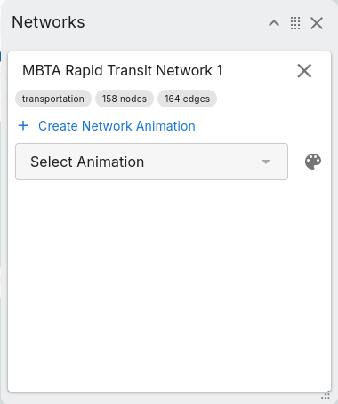
When the “+ Create Network Animation” button is clicked, an input will appear for you to enter the new animation’s name. The name must be unique among other animations for the same network in the same project. To submit, click the blue arrow button next to the input or press the “Enter” key.
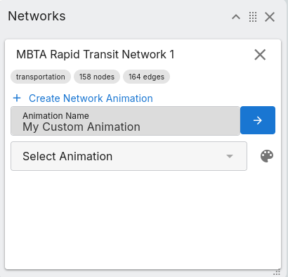
Once the animation has been created, it will be selected in the animation selection control. The animation will have a single state with no deactivated nodes, so the color bar will appear as all one color (since all nodes are included in a single connected component).
The animation slider will only appear when the animation has at least two states. Buttons to “Delete State” and “Add State” will be available among the animation controls.
Note
Anyone with write access on the current project will be able to make changes to this animation.
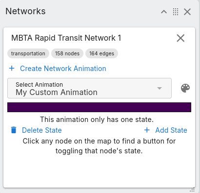
After clicking the “Add State” button, the slider will appear with two ticks. The new state will automatically be active.
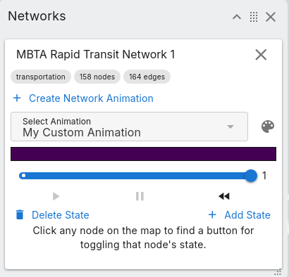
An instructive label at the bottom of the animation controls informs that you can “click any node on the map to find a button for toggling that node’s state”. Clicking on a node on the map will cause a tooltip to appear. As with any vector feature, the tooltip will display a table of properties. Below the properties table, a button to deactivate/reactivate the node is shown.
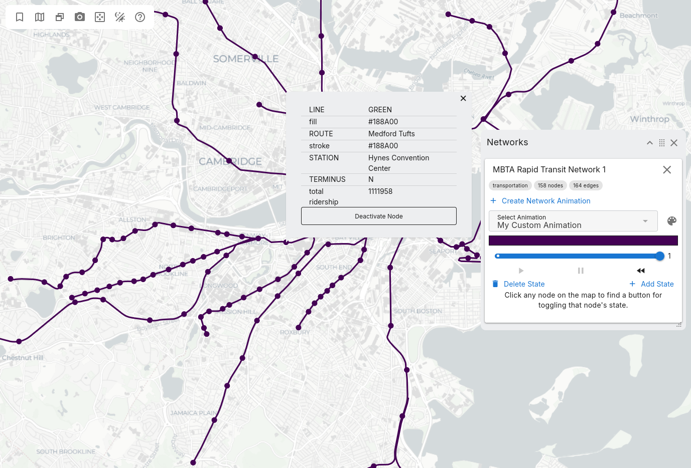
Clicking the “Deactivate Node” button will cause the node and its connected edges to change color, using the deactivated node color selected in the animation configuration options. In the screenshot below, the deactivated node is shown in red.
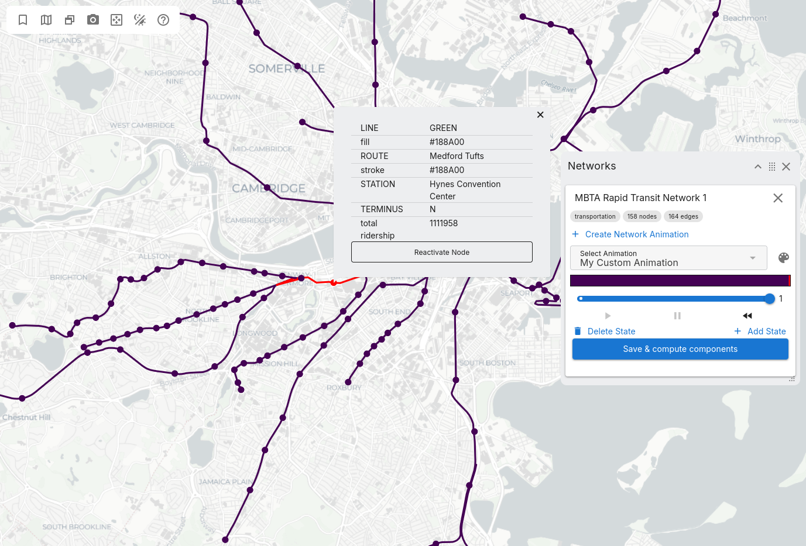
Additionally, after at least one node has changed state, the instructional label at the bottom of the animation controls will be replaced by a “Save & compute components” button. We’ll click this button after we deactivate a few more nodes.
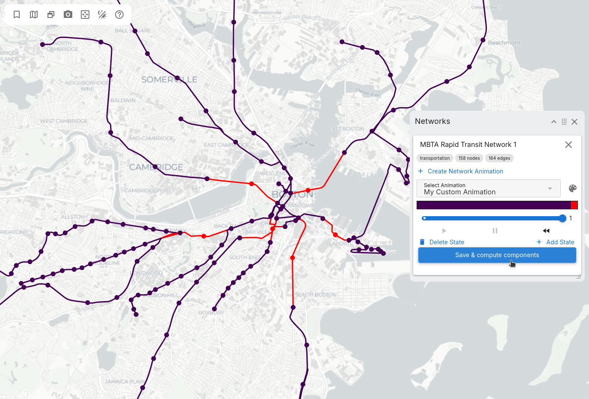
Once the “Save & compute components” button is clicked, the server will take a moment to compute the network’s connected components with the specified outage state. Once a response is received from the server, the visualization will update to color the remaining active nodes according to their component groups. The color bar will also be updated to reflect these node groups.
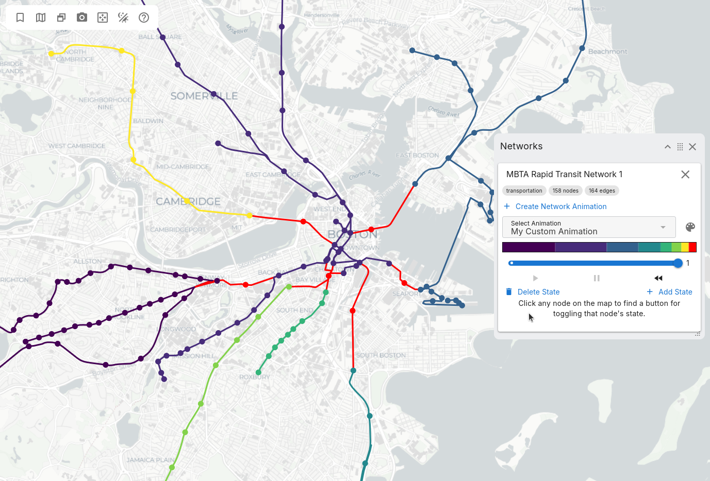
The next time we add a state to the animation, the new state will be a copy of the current state. We can continue to add states, toggle nodes, and save changes to see the connected components.
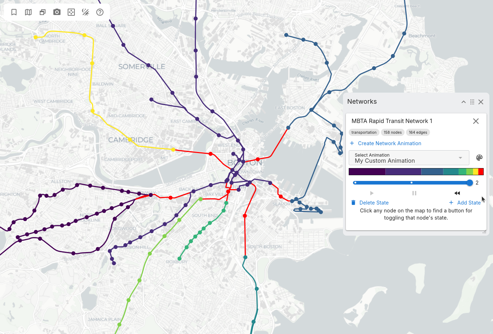
The “Delete State” button will show a confirmation dialog before deleting the current state from your animation.
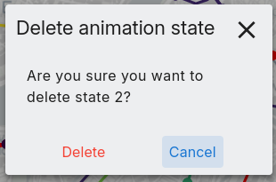
With these controls, you can manually create an animation with many timesteps to illustrate how the connectivity of a given network is affected by different outage states. Anyone else with read permission on the project will be able to view your animation and customize the visualization colors.
Conclusion
This concludes the explanation of the Network panel controls. While manually creating a network animation can provide some insight, a network animation can also be generated by an Analytics task. Tasks like these can be used to explore how a network would be affected by a particular scenario. Continue to the Analytics Panel section to see an example exploring how the connectivity of the Boston subway system would be affected during a simulated flood event.